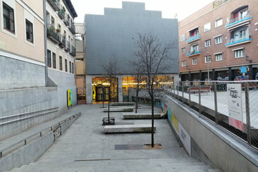

El edificio está formado por dos naves rectangulares paralelas, separadas por un patio. Los lados largos de ambas naves, orientados a Este y Oeste, dan al interior de este patio y a las calles Alameda y Cenicero respectivamente.
La nave Alameda está totalmente exenta y las fachadas de sus lados cortos dan: la del Norte a la Plaza de las Letras y la posterior a una de las salidas del patio. Por el contrario, las fachadas de la nave Cenicero quedan encajadas entre edificios, la posterior está adosada a un hotel y la Norte apenas se ve por estar situada en un callejón estrecho, un antiguo paso de carruajes.
⇧ Volver arriba
Cada nave está formada por tres plantas, aunque el tercer piso del edificio Alameda es de menor tamaño, sobresaliendo a modo de torreón o ático desde la fachada Norte hasta aproximadamente la mitad de nave.
Los tejados son a dos aguas, recubiertos con teja árabe, quedando el de la nave Alameda partido en dos, a diferentes alturas, debido a la existencia de este ático. No obstante, este tejado no es visible desde la calle, ya que queda escondido tras un pretil o antepecho que recorre todo el perímetro de las naves. Al llegar a las fachadas de los lados cortos, donde las dos vertientes del tejado se unen formando un triángulo, el pretil continúa en forma escalonada para ocultarlo de la vista.
Por lo general, las fachadas de los edificios industriales de principios del XX en Madrid se construían en estilo neomudéjar, con cerramientos en ladrillo y sencillas decoraciones geométricas, como la vecina sede de CaixaForum. Sin embargo, en las Serrerías Belgas, el arquitecto Álvarez Naya, optó por recubrir las paredes exteriores con un revoco de color crema que imita sillares de piedra, dándole al edificio un carácter más distinguido.
Las fachadas exteriores de la antigua Serrería Belga se mantienen casi intactas y su carácter más tradicional se contrapone a la modernidad del interior, donde la estructura de hormigón se deja a la vista. Son de estilo historicista, inspirándose en arquitecturas de épocas pasadas, aunque con una ornamentación mínima y de formas muy depuradas.
El uso del hormigón permitió abrir grandes ventanas, enmarcadas por sencillas molduras, con motivos decorativos de palma simplificada y un llamativo alfeizar de azulejos verdes. Las ventanas están agrupadas de dos en dos, separadas mediante pilastras, que apoyándose en un zócalo continuo, recorren toda la altura de la fachada y rematan en pequeños pináculos sobre el pretil.
En la cornisa y otras partes de la fachada, podemos ver textos originales en mayúsculas grabados sobre el revoco de piedra, que daban información sobre la serrería. Esta tipografía se digitalizó en unos talleres en Medialab y es con la que se diseñó el logotipo del centro.
⇧ Volver arriba
La entrada principal de Medialab Prado está ubicada en la Plaza de las Letras. Mirando hacia la fachada, tendríamos el edificio de CaixaForum a la espalda, la calle Alameda a la derecha y unas casas a la izquierda. La fachada de la nave Cenicero queda escondida tras estas casas y la de la nave Alameda ocupa prácticamente todo el ancho de la plaza.
Esta plaza, de cemento gris, tiene dos alturas. La zona más alta, a la derecha, está a nivel de calle y oculta parte del primer piso de la nave Alameda que queda por debajo del nivel del suelo. Bajo este tramo de la plaza, donde hay bancos de piedra y un parque infantil con columpios, se sitúa el espacio del Fablab.
En la parte izquierda de la plaza, a un nivel más bajo, está la entrada de Medialab. Para acceder descendemos de frente por una escalera, o por una rampa a su izquierda que baja en paralelo junto a ella pegada a la fachada de las casas. A la derecha de la escalera hay una pared con ventanas que dan al subterráneo donde está el Fablab. Una vez que llegamos abajo, atravesamos un espacio con árboles y bancos y desembocamos frente a la reja que separa el recinto de Medialab de la plaza. El suelo cambia y pasa a ser de ladrillos rojizos. Podemos seguir recto y acceder al interior de la nave Alameda, atravesando un pequeño porche y unas puertas dobles de madera y cristal, o bien girar a la izquierda para entrar en el patio, pasando por debajo de La Cosa, la escalera colgante.
Las fachadas de las dos naves son prácticamente cuadradas, con un remate escalonado en la parte superior. La de la nave Cenicero apenas tiene ventanas y está decorada con sencillas molduras que marcan la posición de las vigas y pilares del interior. No está alineada con la nave Alameda, sino que se sitúa un poco más atrás, para dar salida, por un antiguo paso de carros y a través de un arco, a la calle Cenicero.
En la planta baja de la nave Alameda se abren grandes ventanales que permiten ver el interior del edificio desde la Plaza de las Letras. La esquina inferior izquierda queda recortada para alojar en ella un pequeño porche entre los pilares de hormigón del edificio, que es donde se encuentra la puerta de entrada.
Los dos pisos superiores de esta fachada, incluido su remate escalonado, están totalmente recubiertos por una enorme pantalla digital de 14,5 metros de ancho por 9,4 de alto. Por el día está apagada y se pueden ver las 27.000 bombillas LED que conforman los píxeles de la pantalla. Se programa mediante ordenador para proyectar de noche vídeos, imágenes, textos o videojuegos creados por artistas o por grupos de trabajo de Medialab. A veces estos proyectos son interactivos con el objetivo de que las personas que están en la plaza participen en ellos mediante sus movimientos que son recogidos por una cámara situada en lo alto de la fachada. Es uno de los elementos que definen Medialab, que conecta las actividades realizadas en el centro con el resto de la ciudad.
Aunque de día no llama mucho la atención, la fachada principal de Medialab es muy atractiva de noche, con la pantalla encendida y La Cosa iluminada de colores.
⇧ Volver arriba
La fachada de la calle Alameda es la más representativa de la Serrería Belga, ya que en origen permitía acceder al patio del recinto por dos entradas, una situada al final de la nave, que aún existe, y otra al principio, ya desaparecida, que conducía al paso de carros de la calle Cenicero. Además, también tenía una ferretería con puerta y escaparate a la calle.
El zócalo se adapta a la pendiente de esta vía, aumentando de altura a medida que bajamos hacia la calle Atocha. La planta de la nave no es totalmente rectangular, ya que para seguir la línea de la calle hace un ligero quiebro hacia afuera en su último tramo, tras el cual está la valla que da acceso a la parte trasera del patio.
La fachada está formada en su mayor parte por ventanas, organizadas en parejas y separadas por pilastras. Las dos plantas inferiores constan de seis pares de ventanas, con una más en el tramo del quiebro, mientras que el tercer piso, más corto, tiene solo tres pares. Sin embargo, en la planta inferior, el primer par se sustituye por un solo vano más ancho, que antiguamente conectaba con el paso de carros de la calle Cenicero. Sucede lo mismo con el tercer par, también unido, donde estaba la entrada de la tienda. Las ventanas de esta planta están a poca altura, lo que nos permite ver el interior del edificio, así como tocar el azulejo verde del alfeizar y el arranque de las pilastras entre unas y otras.
A lo largo de las cornisas se conservan unos textos en mayúsculas grabados sobre el revoco en sola línea. En la cornisa del tercer piso se lee “SOCIEDAD BELGA DE LOS PINARES DEL PAULAR”, nombre oficial de la empresa maderera, y en la de la segunda planta, “MADERAS DEL PAÍS Y EXTRANJERAS FÁBRICAS EN VILLALBA Y RASCAFRÍA = ALMACENES Y TALLERES MECÁNICOS = ATOCHA 153 Y 155”. Esta dirección hace referencia a la entrada principal del recinto de la serrería, que en origen se extendía desde las naves hasta la calle Atocha, espacio ocupado hoy por un hotel.
⇧ Volver arriba
La fachada que da a la calle Cenicero se ubica entre dos edificios, adosada a un hotel por el Sur y a una casa por el Norte. Entre la nave y la casa se encuentra la entrada al paso de carros, un pasillo que discurre entre ambas y conduce al patio. Dicha entrada, en línea con el muro de la fachada, es una pared formada por un arco rebajado, cerrado por una reja, y sobre este tres vanos, uno en forma de arco en el centro y dos rectangulares más estrechos a ambos lados. La estructura llega casi hasta la cornisa de la nave Cenicero y remata en una moldura escalonada, con el texto “ENTRADA ATOCHA 153 Y 155”, y cuatro pináculos.
Esta fachada es similar a la de la nave Alameda, pero con un carácter más cerrado, debido a la estrechez de la vía y porque no tenía acceso al público. Consta de tres pisos coronados por una cornisa con la inscripción “TNO 1450M = SOCIEDAD BELGA DE LOS PINARES DEL PAULAR = ATOCHA = 153 Y 155”.
En la planta baja alternan los paños de muro liso con pilastras en relieve. Esta pared correspondía a la parte trasera del almacén de madera, al que se accedía por el patio, por eso no tiene ventanas, exceptuando una situada en el extremo Sur que da a la actual cantina.
Las dos plantas superiores tienen, en la parte central, cuatro pares de ventanas por piso, y a cada lado dos paños ciegos, más altos que anchos, con inscripciones publicitarias de la compañía y que ocupan la altura de los dos pisos.
En el primer paño, junto a la fachada del hotel, se lee “TALLERES Y PINARES PROPIOS MADERAS DEL PAÍS Y EXÓTICAS”; el siguiente, a su derecha, reza “MADERAS ATOCHA 153 Y 155 FRISOS ENTARIMADOS ENVASES Y DUELAS”. Pasado el tramo de ventanas, está el tercer panel con el texto: “TALLERES Y PINARES PROPIOS FÁBRICAS EN RASCAFRÍA Y VILLALVA”; y en el último, ya junto a la entrada del paso de carros, leemos “MADERAS de todas clases CARPINTERIAS Y MOLDURAS TLFNO.1459M.”
Aquí es donde mejor se aprecian las dos elegantes tipografías que decoran las fachadas del edificio, digitalizadas posteriormente en un taller de Medialab. Estas dos fuentes, de licencia libre y disponibles en Internet, se denominan “Serrería Sobria” y “Serrería Extravagante”. Las letras de la primera, con las que se diseñó el logotipo de Medialab, son cuadradas, barrigudas y de patas cortas. La fuente “Serrería Extravagante”, utilizada en el logo del Fablab, es alargada, estrecha y con algunos remates haciendo ondas.
⇧ Volver arriba
⇦ Anterior: Entorno y descripción general
⇨ Siguiente: El patio